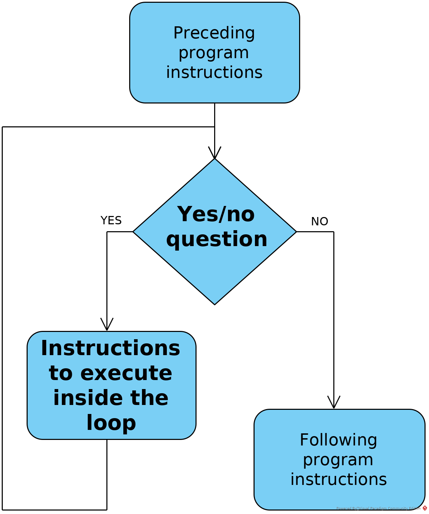
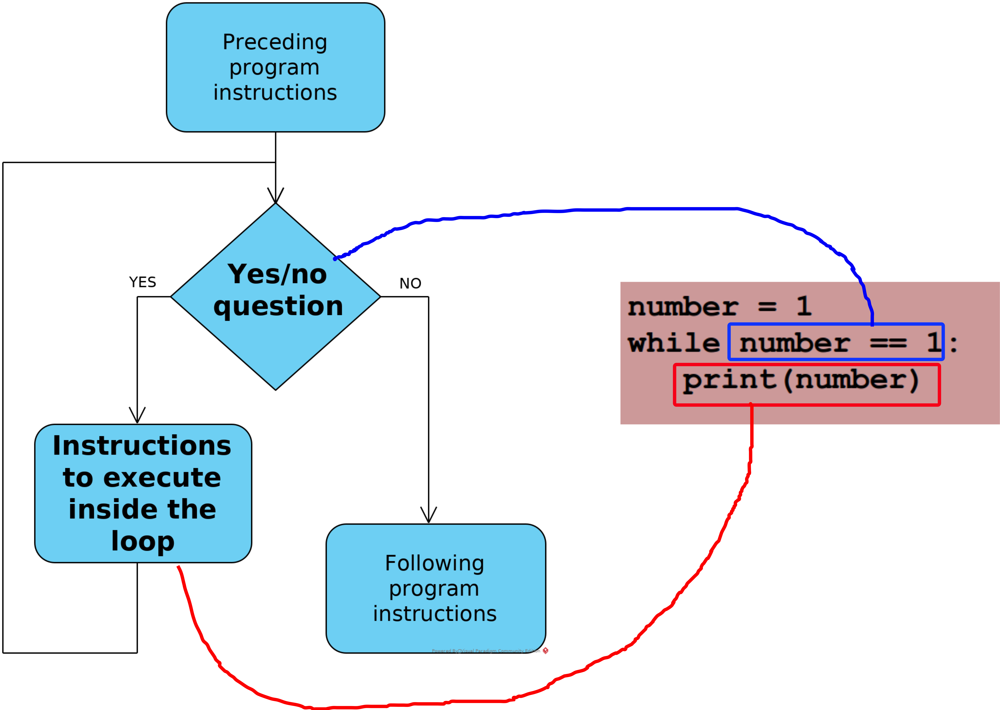
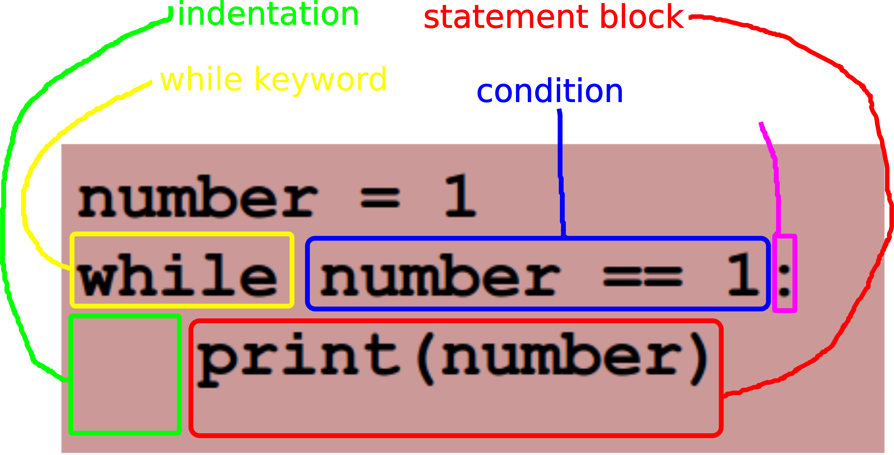

The flowchart of a generic loop in a computer program

The loop is one of the three essential ingredients needed for expressing algorithms:
assignments
conditional statements
loops
A loop is used when the same instructions need to be iterated (repeated several times):
to improve the development process (better readability and maintainability, easier than cutting and pasting!)
to optimise the program (smaller code size)
to allow the program to be written at all:
the number of iterations may not be known in advance if it depends on environment communication or is random
if the program represents a 'server' (runs infinitely)
Loops in Python
The while loop in Python
The main function of a loop is to repeat some group of instructions over and over again. The loop in code snippet ? does exactly that: it prints out the number 1 over and over again. The condition is True, therefore always true. The call to time.sleep() has been added to space the iterations by 1 second, to avoid looping at a speed that hogs the CPU and freezes the computer running it. Once running, this little program will have to be stopped externally (Ctrl-C on the command line or stop button in PyCharm).
Example of an infinite while loop in Python
import time
number = 1
while number == 1:
print(number)
time.sleep(1)
Relating a Python while loop to the generic flowchart

The syntax of a Python while loop

Exiting the loop
Exiting the loop
Most of the time, loops are not written to run infinitely. For the loop not to run infinitely, it must be possible for the conditional expression to have the value False after a finite number of iterations and this is the case either
if the conditional expression has the value False to start with (e.g. False or x = 3; x > 4), in which case the loop statement block executes 0 times
Loop with condition initially equal to False
number = 1
while number == 11:
print(1)
if the conditional expression has the value True to start with but at least one variable is modified in the loop statement block so as to change the value of the expression to False after a finite number of iterations
Two examples are given below: one that involves a fully determined route towards a false condition (number starts at 1 and is incremented in each iteration until it reaches 11, after 10 iterations) and one that involves a random route (number again starts at 1 but randomly changes until it reaches 11 after a random number of iterations - the probability of this never happening is practically 0).
Example of a finite while loop with fully determined iterations
number = 1
while number != 11:
print(1)
number = number + 1
Write a Python script that produces the output below. Use a loop to print the lines between the first and the last one.
Example of a finite while loop without fully determined iterations
import random
number = 1
while number != 11:
print(1)
number = random.randint(1, 11)
Rewrite code snippet ? so that instead of printing 1 the loop statement block prints the random number. It should not print the value of number set outside of the loop.
In our examples so far the variable in the condition was being calculated in the statement block only to control the number of iterations. However, loops are often used to process sequences of some kind, which naturally provide a variable that can be checked in the condition.
Example 1
Let's say we want to print out all the numbers from 1 to 10. We want the first iteration to print 1, the second to print 2 etc. - 10 iterations in all.
First, let's design the statement block:
Because the number printed is changing from iteration to iteration, it needs to be a variable, e.g. n
Then we can easily write the main part of the statement block as print(n)
The last thing that is missing in the statement block is some code to change n between iterations: n = n + 1
Now we need to wrap the statement block in a while loop with a condition. This takes a small bit of analysis: n is moving upwards by one in each iteration and we want the looping to stop when n goes beyond 10. So n naturally lends itself as the basis for the condition, n < 11 or n != 11.
Outside of the loop, we set the initial conditions, which in this case is done with the statement n = 1, as we need n to be 1 in the first iteration.
We can now write the short program. It is provided as code snippet ?.
A loop designed to use a variable with two jobs
n = 1
while n < 11:
print(n)
n = n + 1
Example 2
Let's say we want to print out all the characters in a word input by the user, each character on a separate line followed by its UTF code in square brackets.
Again, let's design the statement block first:
The character changes between iterations so must be a variable, e.g. c
This makes it easy to write the printing code: print("{0}[{1}]".format(c, ord(c)))
We need to move from character to character between iterations. We do not know what the characters will be, but they are in the word that we will get from the user and can place in a variable. Let's call the word variable theWord and we'll worry about obtaining it later.
Now what thing can be changed generically between iterations to move from character to character? Not the character itself, because there is no regularity there (from x to y to l to o p to h to o to n to e? maybe if it were always that word...). But the index of the character in the word, which can be used to get the character, can be incremented. That is a generic operation, the same for each move from one character to the next. Let's name the index i. Then we access the character with c = theWord[i] and move to the next one with i = i + 1
To wrap the statement block in a while loop with a condition. We want the loop to stop when it gets to the end of the word. The first character has index 0 and the last has index len(theWord) - 1. We don't want the index len(theWord) to 'pass'. Also, the index is moving upwards. Thus we should make the condition i < len(theWord).
Finally, we make the initial conditions i = 0 as we want the first index to be 0.
Also, we must remember to fetch the word before anything else.
We can now write the short program. It is provided as code snippet ?. The length of the word is stored in a variable for optimisation (i.e. so that the length is not calculated in every iteration).
Another loop designed to use a variable with two jobs
theWord = input("Please enter a word: ")
wordLength = len(theWord)
i = 0
while i < wordLength:
c = theWord[i]
print("{0}[{1}]".format(c, ord(c)))
i = i + 1
Write a Python script that reads in three words separated by whitespace, entered by the user. The program should check the number of words entered and that they contain only alphabetic characters. If the input does not meet these requirements the program should ask the user to try again and repeat the process until the input is valid.
Next, the program should print the words, each in a new line and followed by its length in square brackets.